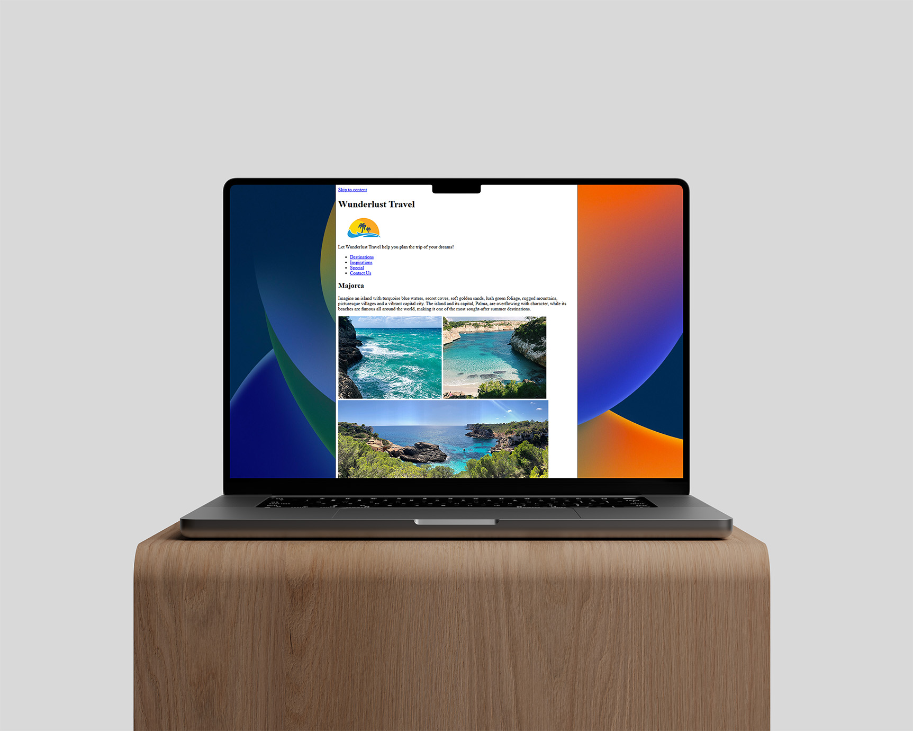

Refactoring Wunderlust Site with Semantic HTML
Wunderlust began as a journey into structure, transforming cluttered code into clean, semantic HTML. It wasn’t just about tags; it was about telling a story machines and humans could both understand. This refactor brought clarity, accessibility, and purpose to the travel brand’s online presence. It was the first step in understanding how small changes in code can elevate user experience and honor the intention behind every word and image.